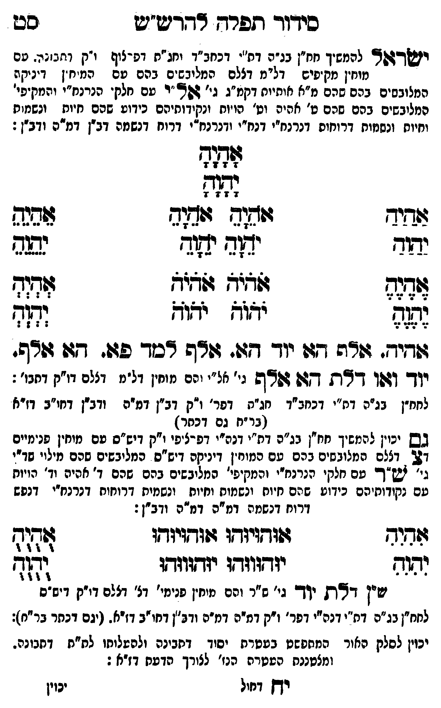

Neue Klartextfassung
ישראל [להמשיך חו"ן נרנח"י דבינה דמ"ה דכחב"ד וחג"ת דפרצוף ו"ק דתבונה. עם מוחין מקיפים דל"ם דצלם המלובשים בהם עם המוחין דיניקה המלובשים בהם שהם מ"ה אותיות דקמ"ג גי' אל"ה עם חלקי הנרנח"י והמקיפי' מלובשים בהם שהם ט' אהי"ה וט' הויות ונקודותיהם כידוע שהם חיות ונשמות וחיות ונשמות דרוחות דנרנח"י דנרנח"י דרוח דרוח דנשמה דב"ן דמ"ה וב"ן: [?]] אָהָיָהָ יָהָוָהָ === טבלה === [טור ימין] אַהַיַהַ יַהַוַהַ אֶהֶיֶהֶ יֶהֶוֶהֶ [טור אמצעי] אֹהֵיָהֵ אֹהֵיָהֵ יֹהֵוָהֵ יֹהֵוָהֵ אֹהֹיֹהֹ אֹהֹיֹהֹ יֹהֹוֹהֹ יֹהֹוֹהֹ [טור שמאל] אֵהֵיֵהֵ יֵהֵוֵהֵ אְהְיְהְ יְהְוְהְ === סוף טבלה === אהיה, אלף הא יוד הא, אלף למד פא הא אלף, יוד ואו דלת הא אלף [גי' מ"ה והם מוחין דל"ם דצלם דו"ק דתבו':] [לנח"ן נרנח"י דמ"ה דכחב"ד חג"ת דפר' ו"ק דב"ן דמ"ה וב"ן דחו"ב דז"א (נרנח"י עם דכתר) [?]] [גם יכוין להמשיך חו"ן נרנח"י דמ"ה דכ"א דפרצופי ו"ק דו"ס עם מוחין פנימיים דצ' דצלם המלובשים בהם עם המוחין דיניקה דו"ס המלובשים שהם מילוי שדי' גי' ש"ך עם חלקי הנרנח"י והמקיפי' המלובשים בהם שהם ד' אהיה וד' הויות עם נקודותיהם כידוע שהם חיות ונשמות וחיות ונשמות דרוחות דנרנח"י דנפש דרוח דנשמה דמ"ה וב"ן: [?]] === טבלה === [טור ימין] אִהִיִהִ יִהִוִהִ [טור אמצעי] אוּהוּיוּהוּ אוּהוּיוּהוּ יוּהוּווּהוּ יוּהוּווּהוּ [טור שמאל] אֻהֻיֻהֻ יֻהֻוֻהֻ === סוף טבלה === שין דלת יוד [גי' ש"ך והם מוחין פנימי' דצ' דצלם דו"ק דו"ס] [לנח"ן נרנח"י דמ"ה דכ"א דפר' ו"ק דת"ת דמ"ה וב"ן דחו"ב דז"א. (עם דכתר כל"מ): [?]] [יכוין לסלק האור המתפשט מעטרת יסוד דאימא ולהעלותו למ"ת דתבונה. ומלבוש העטרת הנז' לצורך הדעת דז"א:]
Original gegen neue OCR · Niqqud für Vergleich ausgeblendet
Original
ישראל [להמשיך חו"ן נרנח"י דבינה דמ"הK142-001 דכחב"ד וחג"ת דפרצוף ו"ק דתבונה. עםK142-002 מוחין מקיפים דל"םK142-003 דצלם המלובשיםK142-004 בהם עם המוחיןK142-005 דיניקה המלובשיםK142-006 בהם שהם מ"הK142-007 אותיות דקמ"ג גי' אל"הK142-008 עם חלקיK142-009 הנרנח"י והמקיפי' מלובשיםK142-010 בהם שהם ט' אהי"הK142-011 וט' הויות ונקודותיהםK142-012 כידוע שהם חיותK142-013 ונשמות וחיות ונשמות דרוחותK142-014 דנרנח"י דנרנח"י דרוחK142-015 דרוח דנשמה דב"ן דמ"ה וב"ן: ] אהיה יהוה === טבלה === [טור ימין] אהיה יהוה אהיה יהוה [טור אמצעי] אהיה אהיה יהוה יהוה אהיה אהיה יהוה יהוה [טור שמאל] אהיה יהוה אהיה יהוה === סוף טבלה === אהיה, אלף האK142-016 יוד הא, אלף למד פא הא אלף,K142-017 יוד ואו דלת הא אלף [גי' מ"הK142-018 והם מוחין דל"םK142-019 דצלם דו"ק דתבו':] [לנח"ן נרנח"י דמ"הK142-020 דכחב"ד חג"ת דפר' ו"ק דב"ן דמ"ה וב"ןK142-021 דחו"ב דז"א (נרנח"י עם דכתר) ] [גםK142-022 יכוין להמשיך חו"ן נרנח"י דמ"ה דכ"א דפרצופיK142-023 ו"ק דו"סK142-024 עם מוחין פנימיים דצ' דצלם המלובשיםK142-025 בהם עם המוחיןK142-026 דיניקה דו"ס המלובשיםK142-027 שהם מילוי שדי' גי' ש"ךK142-028 עם חלקי הנרנח"י והמקיפי' המלובשיםK142-029 בהם שהם ד' אהיהK142-030 וד' הויות עם נקודותיהם כידועK142-031 שהם חיותK142-032 ונשמות וחיות ונשמותK142-033 דרוחות דנרנח"יK142-034 דנפש דרוח דנשמה דמ"ה וב"ן: ] === טבלה === [טור ימין] אהיה יהוה [טור אמצעי] אוהויוהו אוהויוהו יוהוווהו יוהוווהו [טור שמאל] אהיה יהוה === סוף טבלה === שין דלת יוד [גי' ש"ך והם מוחיןK142-035 פנימי' דצ' דצלם דו"ק דו"ס] [לנח"ן נרנח"י דמ"ה דכ"אK142-036 דפר' ו"ק דת"תK142-037 דמ"ה וב"ןK142-038 דחו"ב דז"א. (עםK142-039 דכתר כל"מ): ] [יכויןK142-040 לסלק האור המתפשט מעטרתK142-041 יסוד דאימא ולהעלותו למ"ת דתבונה. ומלבוש העטרתK142-042 הנז' לצורך הדעת דז"א:]K142-043
OCR · fehlbar
כידוד תפרד דדדדש"ש סט ושדזא להמשך חחין בנ"ה דח'K142-001 דכחב"ד יחנ"ח דפ-לוף י"ק דתבר. טםK142-002 מוחין מק פי' דל"מK142-003 דצלם המליבשיםK142-004 בהם פם המיח"ןK142-005 דיניקה המלובסיםK142-006 בהם שהם מ"אK142-007 אותיות דקמ"ג גי' 622 "יK142-008 עם חלק'K142-009 הנרנח"י והמקיפי' המליבשיםK142-010 בהם שהם ט' אהיםK142-011 וט' "הויוח ונקידוחיהםK142-012 כידוע שהם חיוחK142-013 ונשמות ויוח ונשנזוח דרוחוםK142-014 דנרנח"י דנחיי ודנרנח"יK142-015 דרוח דנשמה דב"ן דמ"ה ודב"ן: לזדוזש 17 2 7 -4 מגש 7 7 7 2 צשיד זוזגוח 44( בנקK142-016 יוד ימד יאוד נפג זד:ג זודיח זלצצא זד(ד צהלה ילא ידו לל דיד. צודה דז:K142-017 יוד ג. זר דכד פע. 27 ופרש. יזד- דגפן (-6 ת דזן ללשש גי' אל"יK142-018 והם מוחין דל"מK142-019 דצלם דו"ק דחבו: לחח"ן בג"ה דח"יK142-020 דכחב"ד חג"ת דפר' ו"ק דב"ן דמיה ודב"ןK142-021 דחו"ב דז"א (בר"ח גם דכחר) גשK142-022 יכוין להמשיך חח"ן בג"ם דח"י דנה"י דפ-ציפיK142-023 ו"ק דיש"סK142-024 עם מוחין שנימיים דב' דצצם המגובשסיםK142-025 בהם טם כמוח'ןK142-026 דיניקה דיש"ס ' המליבשיםK142-027 שהם מילוי שד"י ג"ץ זש"ךK142-028 עם חלקי הנרנח"י והמקיפי' המליבשיםK142-029 בהם שהם ד' איהK142-030 וד' הויות טם נקודוחיהם כידוטK142-031 שהם חיוחK142-032 ונשמות וחיוח ונשמיחK142-033 דרוחות דנרנחייK142-034 דנפש דרוח דנשמה דמ"ה דמ"ה ודב"ן: ודוש ד(זדגיגשו דהגדגיוךךו צזזוח נדגה יודווזד: יודווזדו 2103 ש"ן ד246 יי גי' ש"ר ונם מיחיןK142-035 פנימי' דצ' דצלם די"ק דיס"ס לחח"ן בג"ם דח"י דנהייK142-036 דפר' ו"ק ∅K142-037 דמ"ה דמ"ה ודב"ןK142-038 דחו"ב דזיא- (יגםK142-039 דכתר בר"ח): יכויןK142-040 לסלק האור המתפשט בעטרתK142-041 יסוד דחבינה ולהשלוחו לח"ח דחבונה. ומצטננח הטטרהK142-042 הנז' לצורך הדעח דז"א : ידן דחול יכויןK142-043